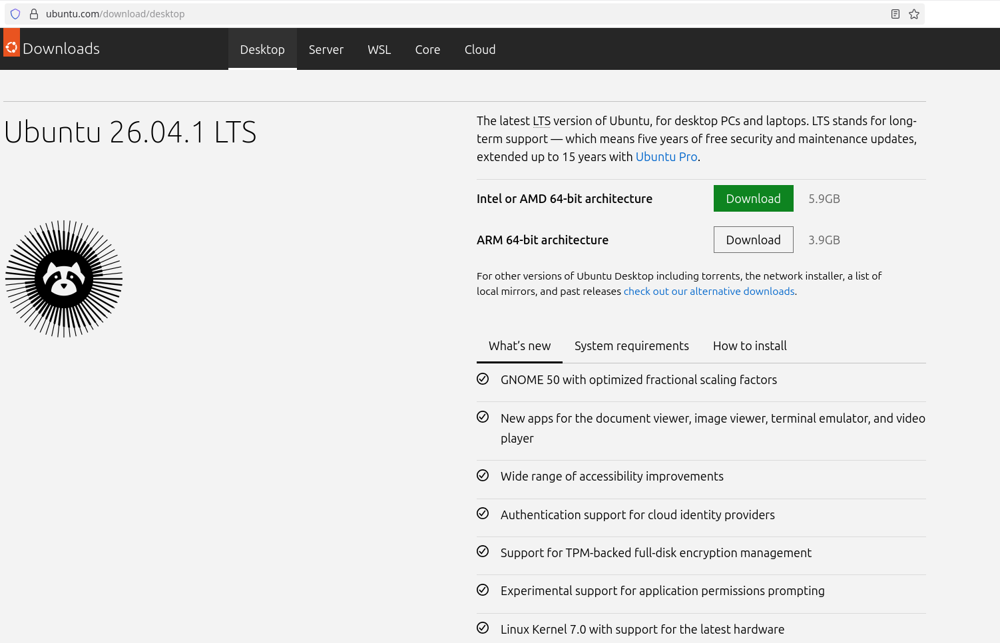
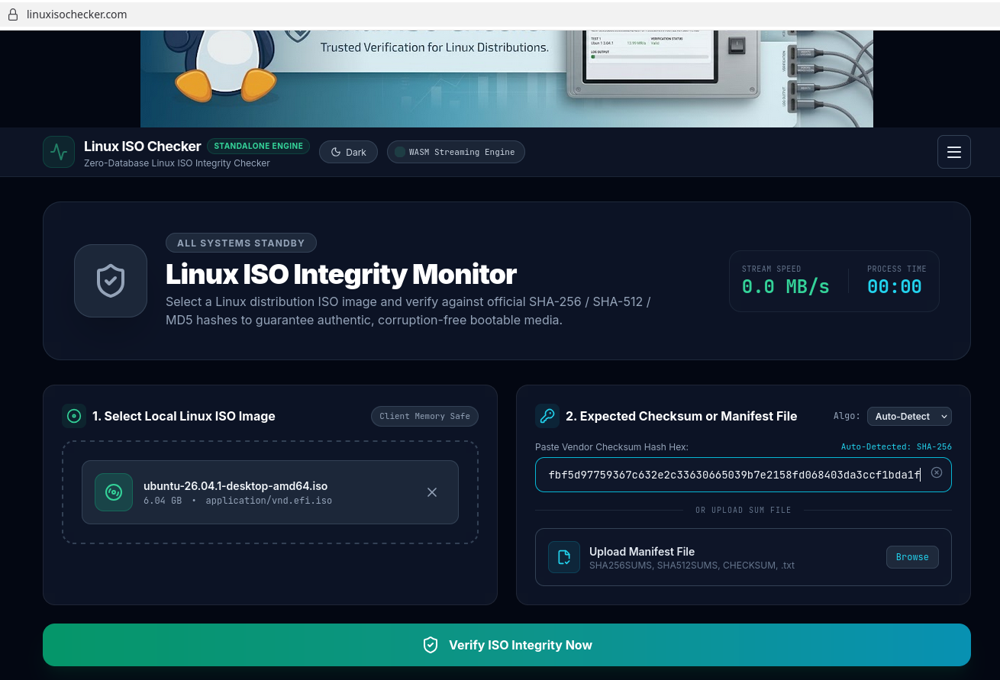
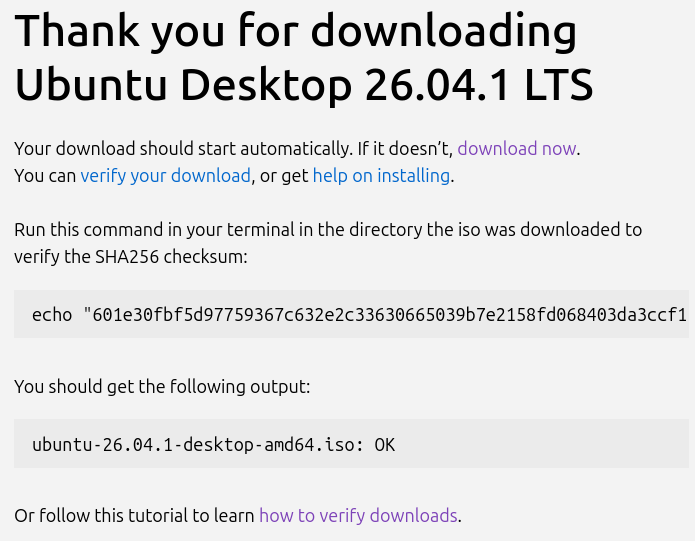
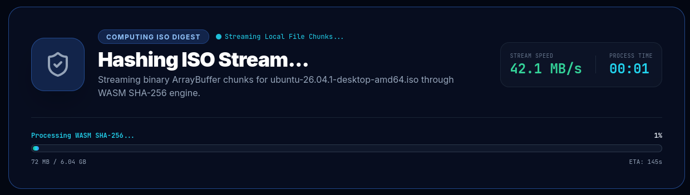
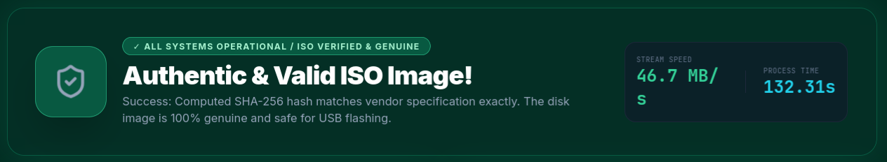

Download safety
How to verify a Ubuntu Linux Download

Visit the official Ubuntu download page to obtain your ISO file.
Click on the download link of the version of Ubuntu you want to download. (i.e. Ubuntu 26.04.1)

Go to the Linux ISO Checker homepage.
Click "browse files" or drag the Ubuntu ISO image from your Downloads folder into the "Select Local Linux ISO Image" box.

Copy the checksum from the Ubuntu download page for the version you downloaded and paste it into the "Expected Checksum" field.
Note: Copy just the bit that is the checksum.
For instance if the Ubuntu download page shows
echo "601e30fbf5d97759367c632e2c33630665039b7e2158fd068403da3ccf1bda1f *ubuntu-26.04.1-desktop-amd64.iso" | shasum -a 256 --checkthen you should just copy
601e30fbf5d97759367c632e2c33630665039b7e2158fd068403da3ccf1bda1f
Click "Verify" to compare the calculated checksum with the expected value.

Depending on the file size, the verification process may take a minute or two to process.
When the process has completed, you will see the results of the verification.
